Beyond Minato
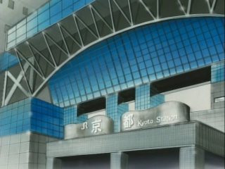
Digimon Adventure, and to an extent Digimon Adventure 02 featured a number of scenes outside of the Odaiba area, from famous Tokyo landmarks to quiet suburbs. These will be covered in depth as well, so click the links to go to the area of your choice!
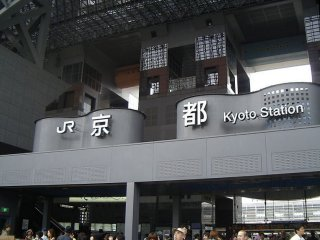
.::The central entrance of JR Kyoto Station::.
Kyoto (京都 ,Kyōto) is a city in the central part of the island of Honshuu, Japan. It has a population close to 1.5 million. Formerly the imperial capital of Japan, it is now the capital of Kyoto Prefecture, as well as a major part of the Osaka-Kobe-Kyoto metropolitan area.
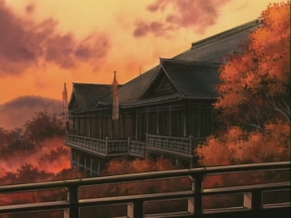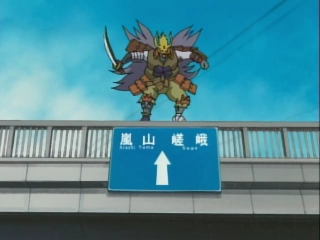
.::Left: Kiyomizudera Temple | Right: Road sign en route to Arashiyama and Saga::.
Although ravaged by wars, fires, and earthquakes during its eleven centuries as the imperial capital, Kyoto was spared from the firebombing of World War II. With its 2000 Buddhist temples and Shinto shrines, as well as palaces, gardens and architecture intact, it is one of the best preserved cities in Japan. (Source: Wikipedia)
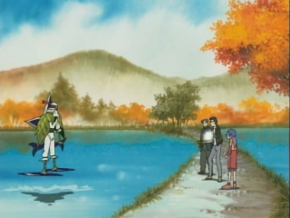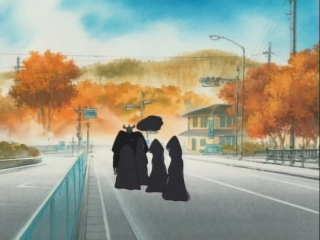
.::A road somewhere near Saga::.
This city is featured in episode 33 of Digimon Adventure 02, Kyō no Miyako wa Kyō no Miyako. (A pun - Miyako's name is written with the same kanji as Kyoto. She also signs her D-Terminal emails with a simple 京.) At least 4 distinct locations are present in the episode, including JR Kyoto Station - presumably they came by Shinkansen - and the famous Kiyomizudera Temple, which is where Miyako's class meets at the end of the epsiode. A route sign leading to Arashiyama and Saga (the west end of Kyoto) is visible at one point, along with a street area that would certainly be recognizable to a resident.
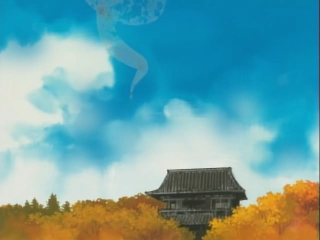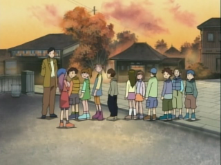
.::Left: Tip of Kiyomizudera pagoda(?) | Right: In front of Kiyomizudera::.
The area where Ichijouji Ken appears and meets Miyako seems to be somewhere around Shijo-dori.
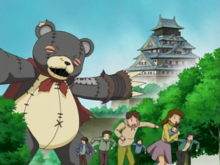
.::Osaka Castle::.
Osaka (大阪市 ,Ōsaka-shi) is a city in Japan, located at the mouth of the Yodo River on Osaka Bay, in the Kansai region of the main island of Honshū. Osaka is a designated city under the Local Autonomy Law and the capital city of Osaka Prefecture. Osaka was historically the commercial capital of Japan, and to date the heart of Japan's second largest metropolitan area of Keihanshin (Osaka-Kobe-Kyoto), whose population is 18,643,915.
Osaka is traditionally considered the "nation's kitchen" or the gourmet food capital of Japan.
Osaka is not a location actually visited in detail in any of the five Digimon seasons. We are, however, given a brief shot of it during the attacked on the Real World by Dark Tower Digimon. In episode 39, Zen'in Shutsudō! Inperiarudoramon, Osaka Castle can be seen in the background during an attack, and again when Ken and Daisuke arrive to destroy the tower. It is one of Japan's most famous castles, and played a major role in the unification of Japan during the sixteenth century of the Azuchi-Momoyama period. (Source: Wikipedia)
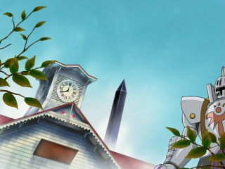 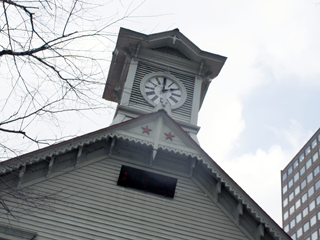
.::Sapporo Clock Tower::.
Sapporo (札幌市 ,Sapporo-shi) is the fifth-largest city in Japan by population. It is the capital of Hokkaido Prefecture, located in Ishikari Subprefecture, and an ordinance-designated city of Japan.
Sapporo is best known outside Japan for hosting the 1972 Winter Olympics, the first ever held in Asia and the annual Yuki Matsuri in the city, internationally referred to as the Sapporo Snow Festival, which draws more than 2 million tourists from around the world. The city is also home to the eponymous Sapporo Brewery.
As with Osaka, Sapporo is only briefly glimpsed as it is described in the TV news report in episode 39, Zen'in Shutsudō! Imperialdramon. The Dark Tower is perched next to the Sapporo Clock Tower, a well-known local tourist attraction. The building is of American design and is one of the few surviving Western style buildings in Sapporo, a city developed in the 1870s with assistance from the American government. It is known by many as the symbol of the city and is a main feature of almost all domestic and international tours of Sapporo. The clock after which it is named continues to run and keep time, and the chimes can be heard every hour.(Source: Wikipedia)
{kind=link}
{kind=link}
{kind=link}
{kind=link}
{kind=link}
{kind=link}
{kind=link}
{kind=link}
{kind=link}
{kind=link}
{kind=link}